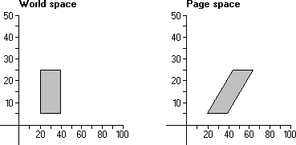

Some applications provide features that shear objects drawn in the client area. Applications that use shear capabilities use the SetWorldTransform function to set appropriate values in the world-space to page-space transformation. This function receives a pointer to an XFORM structure containing the appropriate values. The eM12 and eM21 members of XFORM specify the horizontal and vertical proportionality constants, respectively.
There are two components of the shear transformation. The first alters the vertical lines in an object; the second alters the horizontal lines. The following illustration shows a 20-by-20-unit rectangle sheared horizontally when copied from world space to page space.

A horizontal shear can be represented by the following algorithm:
x' = x + (Sx * y)
where x is the original x-coordinate, Sx is the proportionality constant, and x' is the result of the shear transformation.
A vertical shear can be represented by the following algorithm:
y' = y + (Sy * x)
where y is the original y-coordinate, Sy is the proportionality constant, and y' is the result of the shear transformation.
The horizontal-shear and vertical-shear transformations can be combined into a single operation using a 2-by-2 matrix.
|x' y'| == |x y| * | 1 Sx|
| Sy 1|
The 2-by-2 matrix that produced the shear contains the following values:
|1 1|
|0 1|
Â
Â